| SOURCE | TITLE| IMAGE MATCH | click to source page |
| HipStamp | Great Britain Sc#248 MNG | Great Britain, General Issue Stamp / HipStamp | 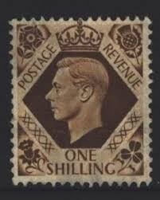 |
| eBay | Great Britain 1 Sh 1937-39 -- King George VI *used* (HBX) | eBay | 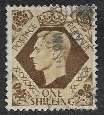 |
| eBay | Uncertified British George VI Stamps for sale | eBay | 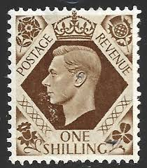 |
| Mystic Stamp Company | 248 - 1939 Great Britain, King George VI - Mystic Stamp Company | 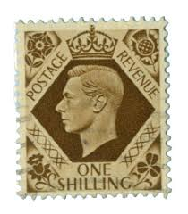 |
| eBay | George VI (1936-1952) Singapore Stamps (1824-1963) for sale | eBay | 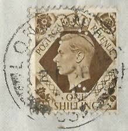 |
| eBay | GBK-423) 1937 Great Britain 1/- brown KGVI (UA) | eBay Australia | 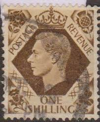 |
| eBay | OPC 1949 GB London to USA 1s KGVI Perfin "FP" 37116 | eBay | 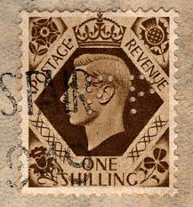 |
| IG Stamps | King George VI Used Definitive Stamps | 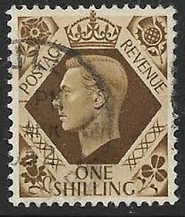 |
| HipStamp | Great Britain 248: 1/- King George VI, used, F-VF | Great Britain, General Issue Stamp / HipStamp | 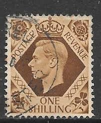 |
| iStock | British King George Vi Postage Stamp Stock Photo - Download Image Now - Black Background, British Culture, Brown - iStock | 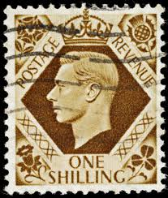 |
| eBay | 5/- Denomination British George VI Stamps for sale | eBay | 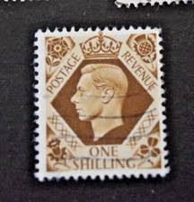 |
| eBay | 完好未铰边/全新邮票褐色英国邮票| eBay | 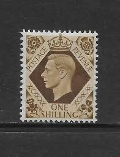 |
| iStock | Vintage Stamp Printed In Great Britain 1937 Shows Queen Victoria And King George Vi Stock Photo - Download Image Now - iStock | 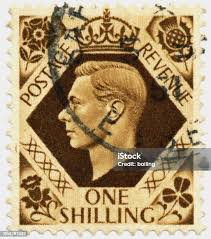 |
| pvoller.net | britain Postal History 1939-1945 | 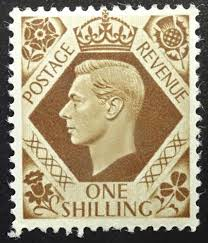 |
| HipStamp | Great Britain (EAF) - Scott #8 - MH - SCV $2.75 | Great Britain, General Issue Stamp / HipStamp | 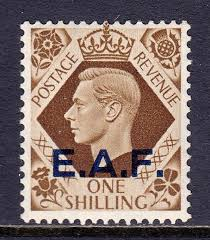 |
| eBay | Royalty 1/- Denomination British George VI Stamps for sale | eBay | 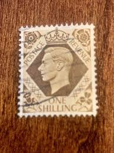 |
| Stamp Community Forum | Mef (Middle Eastern Forces) - Stamp Community Forum | 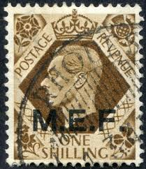 |
| BidCurios | Canada - Used Stamp - Ship Theme - (B-04/B1)L - BidCurios | 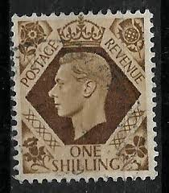 |
| Shutterstock | United Kingdom Circa 1937 To1947 English Stock Photo 199465082 | Shutterstock | 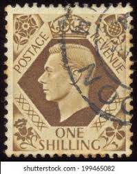 |
| Find Your Stamps Value | Value of george vi eight pence stamps | 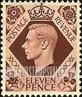 |
| eBay | Green British George VI Stamps for sale | eBay | 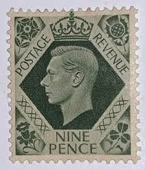 |
| Alamy | United kingdom 1939 stamp printed hi-res stock photography and images - Alamy | 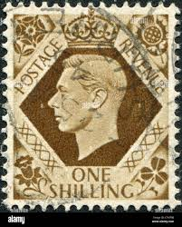 |
| Alamy | Postage stamp from Great Britain in the King George VI - Definitives series issued in 1939 Stock Photo - Alamy | 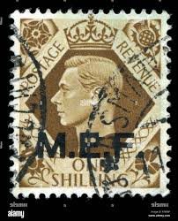 |
| lastdodo.com | Stamps from Tangier - British post office Stamp catalogue - LastDodo | 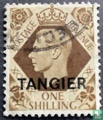 |
| Alamy | King George VI (1895-1952), postage stamp, UK, 1939 Stock Photo - Alamy | 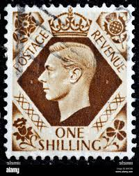 |
| Dauwalders | SG475 1/- Brown | 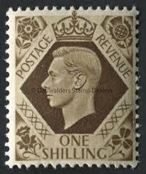 |
| JF-Stamps | British post abroad | JF Stamps Danmark | 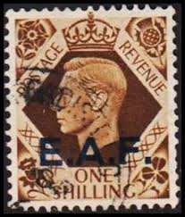 |
| commonwealthstamps.com | Morocco Agencies TANGIER 1949 SG 272 King George VI Fine Used | 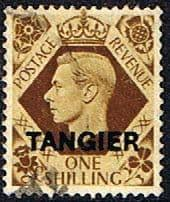 |
| ایسام | 2تمبر باطله یک شیلینگ و یک پنی کمیاب | 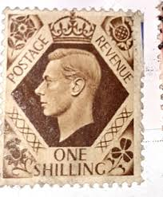 |
| ebid.net | GB stamps 1937-47 KGV1 - 1/- SG475 perfin on eBid United States | 235642650 | 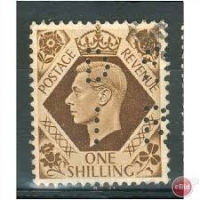 |
| Alamy | King george vi of the united kingdom hi-res stock photography and images - Alamy | 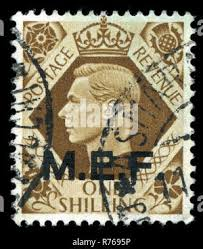 |
| Collect GB Stamps | pb4905 The Four Kings | 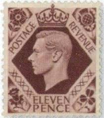 |
| The Postal Museum | George VI stamps - The Postal Museum | 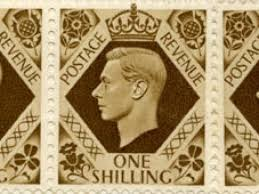 |
| eBay Australia | GBK-424) 1937 Great Britain 1/- brown KGVI (UB) | eBay Australia | 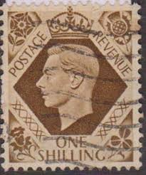 |
| eBay | United Kingdom Stamp 1939 George VI One Shilling | eBay | 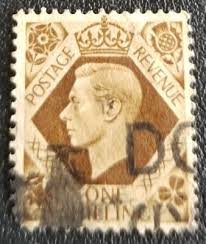 |
| TikTok | Stamp Garage (@stamp.garage) | TikTok | 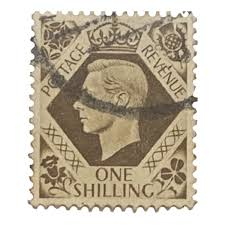 |
| Bob Shop | England - Great Britain, GVIR, 1939, 1/-, brown, MH * for sale in Hanover (ID:671665590) | 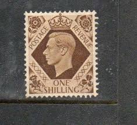 |
| eBay | GBK-429) 1937 Great Britain 1/- brown KGVI (UG) | eBay Australia | 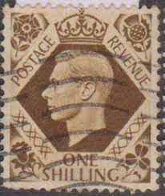 |
| 1st4stamps | SG466a, 2½d ultramarine, NH MINT. Cat £75. WMK SIDE - 1st4stamps | 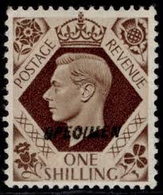 |
| Shutterstock | 8,987 Great Britain Postage Stamp Royalty-Free Images, Stock Photos & Pictures | Shutterstock | 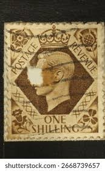 |
| CollectorBazar | GB UK King George 1 ONE SHILLING Overprinted " E.A.F. " EAST AFRICAN FORCES Fine Used | 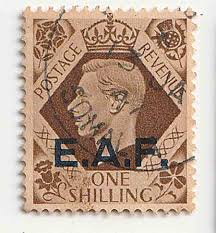 |
| eBay | GBK-428) 1937 Great Britain 1/- brown KGVI (UF) | eBay Australia | 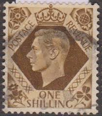 |
| Dreamstime.com | 937 King George Vi Stock Photos - Free & Royalty-Free Stock Photos from Dreamstime | 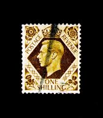 |
| eBay | George VI (1936-1952) Singapore Stamps (1824-1963) for sale | eBay | 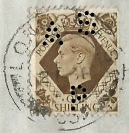 |
| HipStamp | Great Britain-1939-Sc#244//248 King George VI Used Very Fine 86 Years OLD | Great Britain, General Issue Stamp / HipStamp | 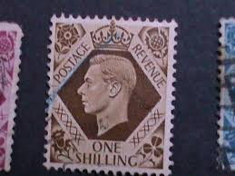 |
| eBay UK | King George VI stamps，George VI definitive series，½d stamp 1d red stamp，Crown | eBay UK | 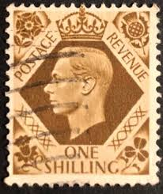 |
| eBay | VF/XF (Very Fine/Extremely Fine) British George VI Stamps for sale | eBay | 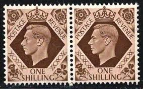 |
| Shutterstock | George Vi: Over 2,001 Royalty-Free Licensable Stock Photos | Shutterstock | 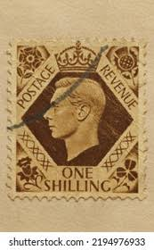 |
| eBay UK | United Kingdom 211 unmounted mint / never hinged 1937 Georg V | eBay UK | 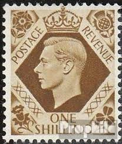 |
| eBay | Great Britain Offices in Africa Scott # 8 Used 1sh Brown King George VI Issue | eBay | 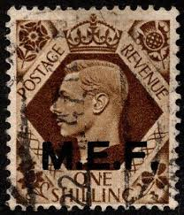 |
| Alamy | Postage stamp from Great Britain in the King George VI - Definitives series issued in 1939 Stock Photo - Alamy | |
| Latinafy.com | Antiguo Sello Inglaterra India Postage Revenue Half 1/2 Anna | |
| eBay UK | GB 1941 George VI 2d pale orange wmk inverted SG 488Wi used B198 *COMBINED POST | eBay UK | |
| Mercari | 1935 New Zealand (No.215) $2 SHILLINGS | Mercari | |
| eBay | British stamp George vi Mint 1939 to 40 period pair | eBay | |
| eBay | Great Britain / 1937-39 / King George Vi / Used / SC248 / One Stamp Only | eBay | |
| commonwealthstamps.com | Middle East Forces M.E.F | |
| Shutterstock | July 5 2025 Jakarta Indonesia Postage Stock Photo 2655034859 | Shutterstock | |
| CollectorBazar | UK GB King George VIth Bicolor 1 ONE SHILLING Overprint TANGIER Used | |
| Shutterstock | 1+ Thousand Postage And Revenue Stamp Royalty-Free Images, Stock Photos & Pictures | Shutterstock |